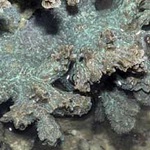

|
|
| hard corals text index | photo index |
| Phylum Cnidaria > Class Anthozoa > Subclass Zoantharia/Hexacorallia > Order Scleractinia > Family Merulinidae |
| Horn
corals Hydnophora sp. Family Merulinidae updated Jun 13 Where seen? These hard corals with conical bumps are sometimes seen on some of our Southern shores, usually on remote and undisturbed reefs. Features: Colonies seen about 15-20cm across, sometimes 50cm in undisturbed shores. The unique feature of these corals are the small conical mounds (0.5cm or smaller), called monticules (also hydnae or hydnophores), that form where the corallite walls of adjacent polyps fuse together. Polyps have short blunt tentacles that surround the base of each monticule. The tentacles that are usually extended only at night. Colours seen include blue and brown. Status and threats: Our horn corals are not listed among the endangered animals of Singapore. However, like other creatures of the intertidal zone, they are affected by human activities such as reclamation and pollution. Trampling by careless visitors, and over-collection also have an impact on local populations. |
 Raffles Lighthouse, Jun 07  Conical mounds called monticules. |
|
 Colony may be a combination of encrusting and branching. |
 Sometimes forming short valleys. |
 Tentacles around the mounds. |
| Horn corals on Singapore shores |


| Hydnophora
species recorded for Singapore from Danwei Huang, Karenne P. P. Tun, L. M Chou and Peter A. Todd. 30 Dec 2009. An inventory of zooxanthellate sclerectinian corals in Singapore including 33 new records **the species found on many shores in Danwei's paper. in red are those listed as threatened on the IUCN global list.
|
|
Links
|
|
|